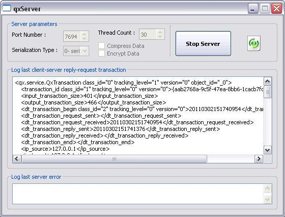
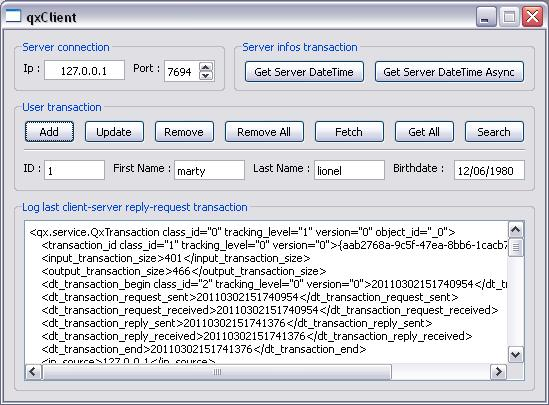

The main purpose of qxClientServer tutorial is to explain how QxService module of QxOrm library works.
QxService module provides an easy and powerful way to create C++ application server (services concept with request from client and reply from server).
qxClientServer project source code is available in the directory ./test/qxClientServer/.
It is recommended to read qxBlog tutorial before reading this article, in particular QxOrm mapping function by class : void qx::register_class<T>(...).
Note : to enable QxService module (required to build qxClientServer tutorial source code), it is necessary to define _QX_ENABLE_QT_NETWORK compilation option in QxOrm.pri configuration file.
For more details about compilation options, please read the manual (user guide) of QxOrm library.
qxClientServer tutorial contains 2 exec and a service layer :
- qxServer : C++ application server with a GUI to configure server and a field to display last transaction between client and server.
- qxClient : GUI with buttons to execute some requests to server and to call services.
- qxService : the service layer, server and client share the same service layer to transfer data and call services.
qxClientServer tutorial step by step :
|

QxOrm library has been accepted into the Qt Ambassador Program
|

Note : for more information about socket, thread, network, etc... Qt website provides tutorials about QtNetwork module :
1- Server GUI : qxServer
qxServer contains only 1 window : GUI has been designed with Qt Designer tool of Qt library.
The main purpose of this window is to display to user the last transaction between client and server, and to configure some server parameters.
For a real project (a production software), it is strongly recommended to provide a log system instead of a GUI.
A minimal user interface (or no user interface) is the optimal solution for an application server.
main_dlg.h and main_dlg.cpp files implements qxServer GUI :
1.1- File description main_dlg.h
#ifndef _QX_SERVER_MAIN_DLG_H_
#define _QX_SERVER_MAIN_DLG_H_
#include "../qt/ui/include/ui_qxServer.h"
class main_dlg : public QWidget, private Ui::dlgServer
{ Q_OBJECT
private:
qx::service::QxThreadPool_ptr m_pThreadPool;
public:
main_dlg(QWidget * parent = NULL) : QWidget(parent), Ui::dlgServer() { main_dlg::init(); }
virtual ~main_dlg() { ; }
private:
void init();
void loadServices();
private Q_SLOTS:
void onClickStartStop();
void onCboIndexChanged(int index);
void onError(const QString & err, qx::service::QxTransaction_ptr transaction);
void onServerIsRunning(bool bIsRunning, qx::service::QxServer * pServer);
void onTransactionFinished(qx::service::QxTransaction_ptr transaction);
};
#endif // _QX_SERVER_MAIN_DLG_H_
|
m_pThreadPool variable of qx::service::QxThreadPool_ptr type contains application server engine.
QxOrm library manages all the logical : thread, request-reply, serialization, call services, etc...
init() method initializes default parameters of application server, connects SIGNAL-SLOT events and runs automaticaly the server.
1.2- File description main_dlg.cpp, method init()
void main_dlg::init()
{
setupUi(this);
QObject::connect(btnStartStop, SIGNAL(clicked()), this, SLOT(onClickStartStop()));
QObject::connect(cboSerializationType, SIGNAL(currentIndexChanged(int)), this, SLOT(onCboIndexChanged(int)));
cboSerializationType->addItem("0- serialization_binary", QVariant((int)qx::service::QxConnect::serialization_binary));
cboSerializationType->addItem("1- serialization_xml", QVariant((int)qx::service::QxConnect::serialization_xml));
cboSerializationType->addItem("2- serialization_text", QVariant((int)qx::service::QxConnect::serialization_text));
cboSerializationType->addItem("3- serialization_portable_binary", QVariant((int)qx::service::QxConnect::serialization_portable_binary));
cboSerializationType->addItem("4- serialization_wide_binary", QVariant((int)qx::service::QxConnect::serialization_wide_binary));
cboSerializationType->addItem("5- serialization_wide_xml", QVariant((int)qx::service::QxConnect::serialization_wide_xml));
cboSerializationType->addItem("6- serialization_wide_text", QVariant((int)qx::service::QxConnect::serialization_wide_text));
cboSerializationType->addItem("7- serialization_polymorphic_binary", QVariant((int)qx::service::QxConnect::serialization_polymorphic_binary));
cboSerializationType->addItem("8- serialization_polymorphic_xml", QVariant((int)qx::service::QxConnect::serialization_polymorphic_xml));
cboSerializationType->addItem("9- serialization_polymorphic_text", QVariant((int)qx::service::QxConnect::serialization_polymorphic_text));
cboSerializationType->setCurrentIndex(cboSerializationType->findData(QVariant((int)qx::service::QxConnect::getSingleton()->getSerializationType())));
spinPortNumber->setValue(7694);
spinThreadCount->setValue(qx::service::QxConnect::getSingleton()->getThreadCount());
onServerIsRunning(false, NULL);
onClickStartStop();
}
|
onClickStartStop() event can start and stop the server.
Application server must serialize reply to send to clients : you can choose the serialization type with the combobox cboSerializationType.
For more information about all serialization types supported by QxOrm library, read the manual here.
In most cases, binary serialization is strongly recommended for a network transaction because it is fastest and smallest to limit traffic over network.
We define also a port number for the application server with the field spinPortNumber.
An important parameter is the threads count available : this is the clients count that can send a request in same time.
Default value for this parameter is 30, you can modify this value if you estimate more clients connected simultaneously.
If there is more clients than threads available, the request waits for a free thread, then the transaction is normally executed.
1.3- File description main_dlg.cpp, method loadServices()
void main_dlg::loadServices()
{ server_infos dummy_01; Q_UNUSED(dummy_01);
}
|
loadServices() method is the only dependency with services provided by application server.
This method creates a ghost instance of a service to be sure that all services containing in dll are loaded when server is running.
For a production software, you can provide a plugin mechanism to load all services.
1.4- File description main_dlg.cpp, method onClickStartStop()
void main_dlg::onClickStartStop()
{
QApplication::setOverrideCursor(QCursor(Qt::WaitCursor));
if (m_pThreadPool)
{
m_pThreadPool->disconnect();
m_pThreadPool.reset();
txtError->setPlainText("");
txtTransaction->setPlainText("");
onServerIsRunning(false, NULL);
}
else
{
qx::service::QxConnect::getSingleton()->setPort(spinPortNumber->value());
qx::service::QxConnect::getSingleton()->setThreadCount(spinThreadCount->value());
qx::service::QxConnect::getSingleton()->setSerializationType((qx::service::QxConnect::serialization_type)
(cboSerializationType->itemData(cboSerializationType->currentIndex()).toInt()));
qx::service::QxConnect::getSingleton()->setCompressData(chkCompressData->isChecked());
qx::service::QxConnect::getSingleton()->setEncryptData(chkEncryptData->isChecked());
m_pThreadPool.reset(new qx::service::QxThreadPool());
QObject::connect(m_pThreadPool.get(), SIGNAL(error(const QString &, qx::service::QxTransaction_ptr)), this,
SLOT(onError(const QString &, qx::service::QxTransaction_ptr)));
QObject::connect(m_pThreadPool.get(), SIGNAL(serverIsRunning(bool, qx::service::QxServer *)), this,
SLOT(onServerIsRunning(bool, qx::service::QxServer *)));
QObject::connect(m_pThreadPool.get(), SIGNAL(transactionFinished(qx::service::QxTransaction_ptr)), this,
SLOT(onTransactionFinished(qx::service::QxTransaction_ptr)));
m_pThreadPool->start();
}
QApplication::restoreOverrideCursor();
}
|
onClickStartStop() is called to start and stop the application server : an instance of qx::service::QxThreadPool_ptr type is created (start server) or destroyed (stop server).
If m_pThreadPool exists, then we want to stop the server : m_pThreadPool.reset();.
Otherwise, server is not running so we want to start it :
m_pThreadPool.reset(new qx::service::QxThreadPool());.
m_pThreadPool->start();.
Server settings are contained inside the singleton qx::service::QxConnect::getSingleton().
At the end, GUI subscribes to application server events (SIGNAL-SLOT mechanims from Qt library) to retrieve all errors and to display the last transaction between client and server.
1.5- File description main_dlg.cpp, methods onError() and onTransactionFinished()
void main_dlg::onError(const QString & err, qx::service::QxTransaction_ptr transaction)
{
if (err.isEmpty()) { txtError->setPlainText(""); return; }
QString errText = QDateTime::currentDateTime().toString("dd.MM.yyyy hh:mm") + " : " + err;
if (transaction) { errText += QString("\r\n\r\n") + qx::serialization::xml::to_string(* transaction); }
txtError->setPlainText(errText.replace("\t", " "));
}
void main_dlg::onTransactionFinished(qx::service::QxTransaction_ptr transaction)
{
if (! transaction) { txtTransaction->setPlainText(""); return; }
QString text = qx::serialization::xml::to_string(* transaction);
txtTransaction->setPlainText(text.replace("\t", " "));
}
|
All transactions between client and server are schematized by qx::service::QxTransaction_ptr type.
This class contains all informations needed to execute a service (unique id, date-time, request from client, service to execute, reply from server, error message and error code, etc...).
Transaction is serialized to XML (or JSON) format to display it in the field txtTransaction.
1.6- Result with qxServer project
And... that's all : QxOrm library provides an easy way to create application server.
Now your application server is ready to provide all services that you want to clients :

2- Service layer : qxService
The service layer must be shared between client and server.
When you build the project qxService, you create 2 dll (or *.so files on Linux) : qxServiceClient and qxServiceServer.
The compilation option _QX_SERVICE_MODE_CLIENT is used to know if we are building the client or the server.
qmake tool from Qt library and *.pro and *.pri files allow to create easily this kind of architecture :
* qxService.pri file contains all dependencies and files to compile.
* qxServiceClient.pro file is used only by client mode : define _QX_SERVICE_MODE_CLIENT and dll target name.
* qxServiceServer.pro file is used only by server mode : define dll target name.
So client and server services share the same files.
You don't have to write any line of code to call a service : server can deploy headers files, .dll and .lib files (or *.so on Linux).
2.1- First service : retrieve current date-time from server
The first service provided by our application server is easy : send the current server date-time to all clients.
This service is available by the class server_infos : server_infos.h and server_infos.cpp files.
A same class can provide many services : server_infos class could for example send the server name, the processor frequency, etc...
Each service class contains input parameters (request from client) and output parameters (reply from server).
A parameter class (input or output) must inherit from qx::service::IxParameter class and must be serializable.
A service class must inherit from qx::service::QxService<INPUT, OUTPUT> template and must define a list of methods (list of services).
It is recommended to write input parameter class, output parameter class and service class in the same file.
2.2- File description server_infos.h
#ifndef _QX_SERVICE_SERVER_INFOS_H_
#define _QX_SERVICE_SERVER_INFOS_H_
class QX_SERVICE_DLL_EXPORT server_infos_input : public qx::service::IxParameter
{ ; };
QX_REGISTER_HPP_QX_SERVICE(server_infos_input, qx::service::IxParameter, 0)
typedef boost::shared_ptr<server_infos_input> server_infos_input_ptr;
class QX_SERVICE_DLL_EXPORT server_infos_output : public qx::service::IxParameter
{ public: QDateTime current_date_time; };
QX_REGISTER_HPP_QX_SERVICE(server_infos_output, qx::service::IxParameter, 0)
typedef boost::shared_ptr<server_infos_output> server_infos_output_ptr;
typedef qx::service::QxService<server_infos_input, server_infos_output> server_infos_base_class;
class QX_SERVICE_DLL_EXPORT server_infos : public server_infos_base_class
{
public:
server_infos() : server_infos_base_class("server_infos") { ; }
virtual ~server_infos() { ; }
void get_current_date_time();
};
QX_REGISTER_HPP_QX_SERVICE(server_infos, qx::service::IxService, 0)
typedef boost::shared_ptr<server_infos> server_infos_ptr;
#endif // _QX_SERVICE_SERVER_INFOS_H_
|
server_infos.h file contains 3 classes :
* server_infos_input : inherits from qx::service::IxParameter class (request from client). Our test service doesn't need any input parameter, so this class is empty.
* server_infos_output : inherits from qx::service::IxParameter class (reply from server). This class contains only 1 property, the current server date-time.
* server_infos : inherits from qx::service::QxService<INPUT, OUTPUT> template and contains all methods to call services : only 1 method for our service to retrieve the current server date-time.
Those 3 classes must be registered in QxOrm context, like a persitent class (see qxBlog tutorial).
This is why we are using the QX_REGISTER_HPP_QX_SERVICE macro for those 3 classes.
Moreover, to manage memory and avoid memory leaks, we use smart-pointers from boost library : boost::shared_ptr.
QxService module works with smart-pointers, this is why it is strongly recommended to create some typedef : for example, typedef boost::shared_ptr<server_infos_input> server_infos_input_ptr;.
Finally, constructor service must provide class name under a string format : this is necessary for the QxOrm introspection engine to create services instances.
2.3- File description server_infos.cpp
#include "../../include/precompiled.h"
#include "../../include/service/server_infos.h"
#include <QxOrm_Impl.h>
QX_REGISTER_CPP_QX_SERVICE(server_infos_input)
QX_REGISTER_CPP_QX_SERVICE(server_infos_output)
QX_REGISTER_CPP_QX_SERVICE(server_infos)
namespace qx {
template <> void register_class(QxClass<server_infos_input> & t)
{ Q_UNUSED(t); }
template <> void register_class(QxClass<server_infos_output> & t)
{ t.data(& server_infos_output::current_date_time, "current_date_time"); }
template <> void register_class(QxClass<server_infos> & t)
{ t.fct_0<void>(& server_infos::get_current_date_time, "get_current_date_time"); }
}
#ifdef _QX_SERVICE_MODE_CLIENT
void server_infos::get_current_date_time()
{ qx::service::execute_client(this, "get_current_date_time"); }
#else // _QX_SERVICE_MODE_CLIENT
void server_infos::get_current_date_time()
{
server_infos_output_ptr output = server_infos_output_ptr(new server_infos_output());
output->current_date_time = QDateTime::currentDateTime();
setOutputParameter(output);
setMessageReturn(true);
}
#endif // _QX_SERVICE_MODE_CLIENT
|
server_infos.cpp file contains the implementation of service for the client mode and server mode.
QX_REGISTER_CPP_QX_SERVICE macro registers classes into QxOrm context, like a persistent class (see qxBlog tutorial).
Then, we write the mapping function void qx::register_class(...) :
* The 2 parameters classes (input and output) register all properties needed to execute a client request (no parameter for our test service), and all properties needed to send a reply (current server date-time : t.data(& server_infos_output::current_date_time, "current_date_time");).
* The service class need to register all methods to call services, so in our case : t.fct_0<void>(& server_infos::get_current_date_time, "get_current_date_time");.
Note : all services methods need to have the same signature : no return value, and no argument (for example : void my_service()).
Indeed, in a service method, all input parameters are available with getInputParameter() function (of server_infos_input_ptr type in our example).
Output parameters can be set by setOutputParameter() function (of server_infos_output_ptr type in our example).
A return value of qx_bool type is necessary to indicate that the transaction has been executed successfully or with an error (you can set an error code and an error description).
It is very important to write setMessageReturn(true); to the end of each service method.
The last part of our file contains the implementation of server_infos::get_current_date_time() method for the client mode and server mode.
In client mode, it is very easy : qx::service::execute_client(this, "get_current_date_time");.
In server mode, we retrieve the current date time, then we set it into output parameter, then we indicate that the transaction has been executed without error.
2.4- Second service : work with a persistent class
qxService project contains another sample more complex with a persistent class to transfer between client and server (user class), and some basics actions on a database (SELECT, INSERT, UPDATE, DELETE, etc...).
This second sample transfer complex structures over network : pointers, smart-pointers, collections, search criterias, etc...
#include "../../include/precompiled.h"
#include "../../include/service/user_service.h"
#include "../../include/dao/user_manager.h"
#include <QxOrm_Impl.h>
QX_REGISTER_CPP_QX_SERVICE(user_service_input)
QX_REGISTER_CPP_QX_SERVICE(user_service_output)
QX_REGISTER_CPP_QX_SERVICE(user_service)
namespace qx {
template <> void register_class(QxClass<user_service_input> & t)
{
t.data(& user_service_input::id, "id");
t.data(& user_service_input::user, "user");
t.data(& user_service_input::criteria, "criteria");
}
template <> void register_class(QxClass<user_service_output> & t)
{
t.data(& user_service_output::user, "user");
t.data(& user_service_output::list_of_users, "list_of_users");
}
template <> void register_class(QxClass<user_service> & t)
{
t.fct_0<void>(& user_service::insert, "insert");
t.fct_0<void>(& user_service::update, "update");
t.fct_0<void>(& user_service::remove, "remove");
t.fct_0<void>(& user_service::remove_all, "remove_all");
t.fct_0<void>(& user_service::fetch_by_id, "fetch_by_id");
t.fct_0<void>(& user_service::fetch_all, "fetch_all");
t.fct_0<void>(& user_service::get_by_criteria, "get_by_criteria");
}
}
#ifdef _QX_SERVICE_MODE_CLIENT
void user_service::insert() { qx::service::execute_client(this, "insert"); }
void user_service::update() { qx::service::execute_client(this, "update"); }
void user_service::remove() { qx::service::execute_client(this, "remove"); }
void user_service::remove_all() { qx::service::execute_client(this, "remove_all"); }
void user_service::fetch_by_id() { qx::service::execute_client(this, "fetch_by_id"); }
void user_service::fetch_all() { qx::service::execute_client(this, "fetch_all"); }
void user_service::get_by_criteria() { qx::service::execute_client(this, "get_by_criteria"); }
#else // _QX_SERVICE_MODE_CLIENT
void user_service::insert()
{
user_service_input_ptr input = getInputParameter();
if (! input) { setMessageReturn(0, "invalid input parameter to call service 'user_service::insert()'"); return; }
QSqlError err = user_manager().insert(input->user);
if (err.isValid()) { setMessageReturn(0, err.text()); return; }
user_service_output_ptr output = user_service_output_ptr(new user_service_output());
output->user = input->user;
setOutputParameter(output);
setMessageReturn(true);
}
void user_service::update()
{
user_service_input_ptr input = getInputParameter();
if (! input) { setMessageReturn(0, "invalid input parameter to call service 'user_service::update()'"); return; }
QSqlError err = user_manager().update(input->user);
if (err.isValid()) { setMessageReturn(0, err.text()); }
else { setMessageReturn(true); }
}
void user_service::remove()
{
user_service_input_ptr input = getInputParameter();
if (! input) { setMessageReturn(0, "invalid input parameter to call service 'user_service::remove()'"); return; }
user_ptr user_tmp = user_ptr(new user());
user_tmp->id = input->id;
QSqlError err = user_manager().remove(user_tmp);
if (err.isValid()) { setMessageReturn(0, err.text()); }
else { setMessageReturn(true); }
}
void user_service::remove_all()
{
QSqlError err = user_manager().remove_all();
if (err.isValid()) { setMessageReturn(0, err.text()); }
else { setMessageReturn(true); }
}
void user_service::fetch_by_id()
{
user_service_input_ptr input = getInputParameter();
if (! input) { setMessageReturn(0, "invalid input parameter to call service 'user_service::fetch_by_id()'"); return; }
user_ptr user_output = user_ptr(new user());
user_output->id = input->id;
QSqlError err = user_manager().fetch_by_id(user_output);
if (err.isValid()) { setMessageReturn(0, err.text()); return; }
user_service_output_ptr output = user_service_output_ptr(new user_service_output());
output->user = user_output;
setOutputParameter(output);
setMessageReturn(true);
}
void user_service::fetch_all()
{
list_of_users_ptr list_of_users_output = list_of_users_ptr(new list_of_users());
QSqlError err = user_manager().fetch_all(list_of_users_output);
if (err.isValid()) { setMessageReturn(0, err.text()); return; }
user_service_output_ptr output = user_service_output_ptr(new user_service_output());
output->list_of_users = list_of_users_output;
setOutputParameter(output);
setMessageReturn(true);
}
void user_service::get_by_criteria()
{
user_service_input_ptr input = getInputParameter();
if (! input) { setMessageReturn(0, "invalid input parameter to call service 'user_service::get_by_criteria()'"); return; }
list_of_users_ptr list_of_users_output = list_of_users_ptr(new list_of_users());
QSqlError err = user_manager().get_by_criteria(input->criteria, list_of_users_output);
if (err.isValid()) { setMessageReturn(0, err.text()); return; }
user_service_output_ptr output = user_service_output_ptr(new user_service_output());
output->list_of_users = list_of_users_output;
setOutputParameter(output);
setMessageReturn(true);
}
#endif // _QX_SERVICE_MODE_CLIENT
|
Now, our application server is finished and provides multiple services.
It's time to write a client to call our services...
3- Client GUI : qxClient
Like qxServer project, qxClient project has a GUI designed with Qt Designer tool of Qt library.
There is many buttons to call all services provided by our application server.
There is also a field to set an ip address and a port number to connect to our application server.

3.1- Method description onClickBtnDateTime()
How to retrieve the current server date-time ?
Here is the code executed when a user is clicking on Get Server DateTime button :
void main_dlg::onClickBtnDateTime()
{
QApplication::setOverrideCursor(QCursor(Qt::WaitCursor)); server_infos service;
service.get_current_date_time(); updateLastTransactionLog(service.getTransaction());
QApplication::restoreOverrideCursor();
}
|
As you can see, the client doesn't have to write any specific code to call a service, this is just a call to a classic method.
You just have to instanciate a service, then call the service method : get_current_date_time().
updateLastTransactionLog() function log into the field the last transaction executed between client and server (XML or JSON format).
If an error occured, then a message box is displayed with an error description.
To know if a service has been executed without error, you have to use the function : service.getMessageReturn(); (of qx_bool type that can contain an error code and an error description).
Finally, to retrieve the reply from server (so the current date-time), you have to use the function : service.getOutputParameter(); (of user_service_output_ptr type).
3.2- Method description onClickBtnDateTimeAsync()
void main_dlg::onClickBtnDateTimeAsync()
{
if (m_pDateTimeAsync) { qDebug("[QxOrm] '%s' transaction is already running", "server_infos::get_current_date_time"); return; } server_infos_ptr service = server_infos_ptr(new server_infos());
m_pDateTimeAsync.reset(new qx::service::QxClientAsync());
QObject::connect(m_pDateTimeAsync.get(), SIGNAL(finished()), this, SLOT(onDateTimeAsyncFinished()));
m_pDateTimeAsync->setService(service, "get_current_date_time");
m_pDateTimeAsync->start();
}
void main_dlg::onDateTimeAsyncFinished()
{
if (! m_pDateTimeAsync || ! m_pDateTimeAsync->getService()) { return; }
updateLastTransactionLog(m_pDateTimeAsync->getService()->getTransaction());
m_pDateTimeAsync.reset();
}
|
The second example is the code executed when a user is clicking on Get Server DateTime Async button.
It shows how to call a service in async mode, so without blocking GUI (waiting for a reply from server).
QxOrm library provides qx::service::QxClientAsync class to make easier async service call.
Aync call with QxService module is very easy :
* create an instance of a service
* create an instance of qx::service::QxClientAsync type
* connect to the finished event (to indicate that a reply from server is available)
* set the service and method to call (string format) to qx::service::QxClientAsync object
* run the transaction with the method start()
3.3- Method description onClickBtnAddUser()
void main_dlg::onClickBtnAddUser()
{
QApplication::setOverrideCursor(QCursor(Qt::WaitCursor)); user_service_input_ptr input = user_service_input_ptr(new user_service_input());
input->user = fileUser(); user_service service;
service.setInputParameter(input);
service.insert(); user_ptr output = (service.isValidWithOutput() ? service.getOutputParameter()->user : user_ptr());
if (output) { fillUser(output); } updateLastTransactionLog(service.getTransaction());
QApplication::restoreOverrideCursor();
}
|
The third example is the code executed when then button Add into User transaction section is pressed.
It adds a new person (user class) into a database.
This sample shows how to pass a structure (user class) into input parameter of a service.
fileUser() method creates an instance of user type and set properties from GUI fields.
This instance is used for our service's input parameter.
If transaction is executed without error, then output parameter (reply from server) contains another instance of user type with the new id added into database.
Finally, we write fillUser() method to update GUI and to display the new user id added into database.
3.4- Method description onClickBtnGetAllUsers()
void main_dlg::onClickBtnGetAllUsers()
{
QApplication::setOverrideCursor(QCursor(Qt::WaitCursor)); user_service service;
service.fetch_all(); list_of_users_ptr output = (service.isValidWithOutput() ? service.getOutputParameter()->list_of_users : list_of_users_ptr());
if (output) { QMessageBox::information(this, "qxClient - get all users", "database contains '" + QString::number(output->size()) + "' user(s)."); } updateLastTransactionLog(service.getTransaction());
QApplication::restoreOverrideCursor();
}
|
The fourth example is the code executed when the button Get All of User transaction section is pressed.
It retrieves in a collection all user stored into database.
Output parameter is a list of users : stl, boost, Qt ou qx::QxCollection.
So, QxService module can share complex data structure between client and server.
Now, enjoy with QxOrm QxService module... ;o)
|